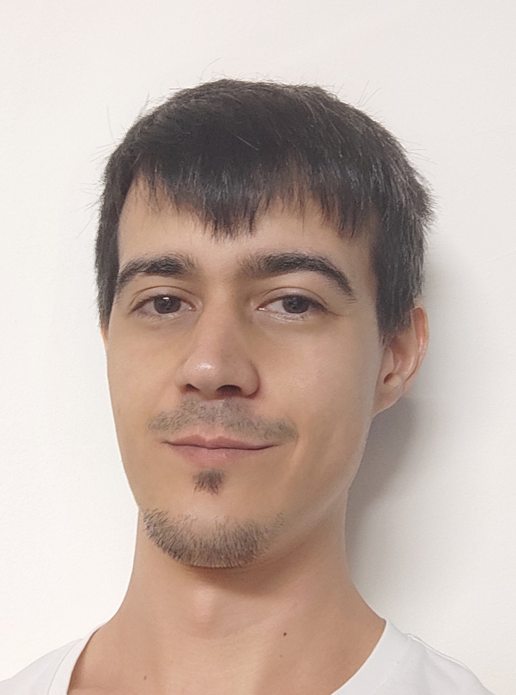

Técnico Electrónico y Desarrollador Multiplataforma
Hola, soy Javi. He creado este portafolio web como un proyecto de presentación, pensado para mostrar mi trabajo, exponer futuros proyectos y como recurso personal de aprendizaje.
En cuanto a formación, he estudiado diversas ramas de la tecnología en modalidad de formación superior. Esto me ha proporcionado una visión amplia de cómo funciona el mundo tecnológico, permitiéndome evolucionar desde la parte más física hasta la programación y el desarrollo de software.
Fuera del ámbito profesional, con un enfoque creativo y técnico, me interesa la impresión 3D, el desarrollo de videojuegos y la tecnología aplicada a la vida cotidiana.

Algo que me hace reflexionar: “La inteligencia artificial no reemplaza la creatividad humana, sino que amplifica nuestro potencial para imaginar y construir el futuro.”
En el ámbito profesional, me inicié en desarrollo de electrónica y mantenimiento eléctrico, pero hace un tiempo cambié de rumbo hacia la programación, que es lo que más me apasiona. Mi objetivo es llegar a ser fullstack, aunque actualmente estoy más centrado en backend. A lo largo de mi carrera, he participado en proyectos que combinan programación, análisis de datos y soporte técnico en entornos industriales.
Me considero una persona versátil y práctica, con facilidad para adaptarme a nuevos entornos tecnológicos y metodologías. Busco retomar mi actividad profesional aportando experiencia y con disposición a aprender y actualizarme según las necesidades del puesto.
INS Caparrella, Lleida 2018 - 2020
INS Caparrella, Lleida 2013 - 2015
INS Guindavols, Lleida 2011 - 2013
IES Bajo Cinca, Huesca 2009 - 2011
Indra Software Labs — mar. 2021 - abr. 2024
Análisis, creación y mantenimiento de procesos ETL con Informatica PowerCenter. Gestión de bases de datos Oracle y SQL Server, consultas SQL y procesamiento de datos con Python.
JAB Suministros Eléctricos — ago. 2020 - dic. 2020
Gestión de ventas, pedidos y clientes con ERP. Asesoramiento técnico y comercial.
Tecmafra — sep. 2017 - ene. 2018
Montaje de cuadros eléctricos, verificación, análisis de instalaciones y resolución de averías.
Batsi/EID Electronics — oct. 2016 - sept. 2017
Montaje, calidad y soldadura de componentes electrónicos. Interpretación de documentos técnicos.
Permiso de conducir: B1 y vehículo propio
Idiomas: Castellano, Catalán B2, Inglés B1
Lenguajes: C#, Java, Python, SQL
Disponibilidad geográfica e inmediata
Ubicación: Ver en el mapa
Email: javisatf1@gmail.com
Teléfono: +34 695 314 553
Ver mi GitHub Mi LinkedIn